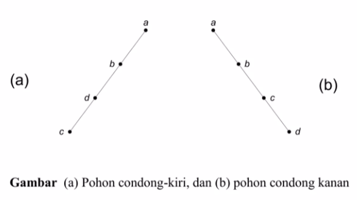

Definisi
Pohon (tree) merupakan salah satu bentuk khusus dari struktur suatu graf . misalkan A merupakan sebuah himpunan sehingga simpul ( vertex) pada suatu graf G yang terhubung . Suatu graf terhubung yang setiap pasangan simpulnya hanya dapat dihubungkan oleh suatu lintasan tertentu ,maka graf tersebut dinamakan pohon( tree). Dengan kata lain pohon (tree) merupakan graf tak- berarah yang terhubung dan tidak memiliki sirkuit.
Pohon Merentang (Spanning Tree)
• Spanning tree dari suatu graf terhubung merupakan subgraf merentang yang berupa pohon.
• Setiap graf terhubung mempunyai paling sedikit satu buah pohon merentang
• Graf tak-terhubung dengan k komponen mempunyai k buah hutan merentang
• Pohon merentang diperoleh dengan cara menghilangkan sirkuit dalam graf tersebut
Pohon merentang adalah :
Subgraf dari graf terhubung berbentuk pohon
Setiap graf terhubung mempunyai paling sedikit mempunyai satu buah spanning tree Graf lengkap G dengan 4 buah pohon merentangnya, Tl, T2, T3 dan T 4
Aplikasi Pohon Merentang
1. Jumlah ruas jalan seminimum mungkin yang menghubungkan semua kota sehingga setiap kota satu sama lain.
2. Perutean (routing) pesan pada jaringan komputer
Pohon Merentang Minimun(minimum Spanning Tree)
Graf terhubung-berbobot mungkin mempunyai lebih dari 1 pohon merentang. Pohon merentang yang berbobot minimum–dinamakan pohon merentang minimum (minimum spanning tree ).
Contoh Soal serta penyelesaiannnya
Soal :
Penyelesaian :
Algoritma Prim
Langkah-langkah Algoritma Prim:
1. Pilih sisi dari graf G yang berbobot minimum, masukkan ke dalm T.
2. Pilih sisi (u, v) yang mempunyai bobot minimum dan bersisian dengan simpul di T,
dengan syarat sisi tersebut tidak membentuk sirkuit di T. Masukkan (u, v) ke dalam T.
3. Ulangi langkah 2 sebanyak n-2 kali.
Contoh Soal dan penyelesaiannnya
Soal
Tentukan Minimum spanning tree graf berikut :
Penyelesaian:
Algoritma Kruskal
Pada Algoritma Kruskal, semua sisi dengan bobot yang minimum dimasukkan ke dalam T secara berurutan.
Contoh soal dan penyelesaiannnya
Soal
Tentukan algoritma kruskal pada gambar graf berikut :
Penyelesaian :
Terminologi pada pohon Berakar
1. Anak (child atau children) dan Orangtua (parent)
b, c, dan d adalah anak-anak simpul a,
a adalah orangtua dari b, c,dan d
2. Lintasan (path)
Lintasan dari a ke j adalah a, b, e, j.
Panjang lintasan dari a ke j adalah 3.
3. Saudara kandung (sibling)
f adalah saudara kandung e, tetapi g bukan saudara kandung e, karena orangtua mereka berbeda.
4. Subpohon (subtree)
Subgraf yang dilingkari dengan akar b dikatakan subpohon(subtree)dari pohon dengan akar a.
5. Derajat (degree)
Derajat sebuah simpul adalah jumlah subpohon (atau jumlah anak) pada simpul tersebut. Derajat a adalah 3, derajat b adalah 2, Derajat d adalah satu dan derajat c adalah 0. Jadi, derajat yang dimaksudkan di sini adalah derajat-keluar. Derajat maksimum dari semua simpul merupakan derajat pohon itu sendiri. Pohon di atas berderajat 3
6. Daun (leaf)
Simpul yang berderajat nol (atau tidak mempunyai anak) disebut daun. Simpul h, i, j, f, c, l, dan m adalah daun.
7. Simpul Dalam (internal nodes)
Simpul yang mempunyai anak disebut simpul dalam. Simpul b, d, e, g, dan k adalah simpul dalam.
8. Aras (level) atau Tingkat
tingkat /level dari sebuah simpul adalah banyaknya sisi pada sebuah lintasan unik (tunggal) antara simpul tersebut dan akar.
9. Tinggi (height) atau Kedalaman (depth)
Aras maksimum dari suatu pohon disebut tinggi atau kedalaman pohon tersebut. Pohon di atas mempunyai tinggi 4
pohon n-ary
Pohon berakar yang setiap simpul cabang nya mempunyai paling banyak n buah anak disebut pohon n-ary .pohon n-ary dikatakan teratur atau penuh (full jika setiap simpul cabangnya mempunyai tepat n anak.
Pohon Biner
1.Pohon n-ary dengan n = 2
2.Pohon yang paling penting karena banyak aplikasinnya
3.Setiap simpul dalam pohon biner mempunyai paling banyak 2 buah anak
4.Dibedakan antara anak tiri (left child) dan anak kanan (right child)
5.Ada berbedaan urutan anak, maka pohon biner adalah pohon terurut
Contoh Pohon Biner

Pohon Biner Seimbang
Pohon biner yang tinggi subpohon kiri dan tinggi subpohon kanan seimbang, yaitu berbeda maksimal 1.
Pohon Pencarian Biner

Penelusuran Pohon Biner
Berikut ini pohon biner dimana A merupakan akar pohon biner , sementara S dan T merupakan subpohon (subtree) dari pohon biner